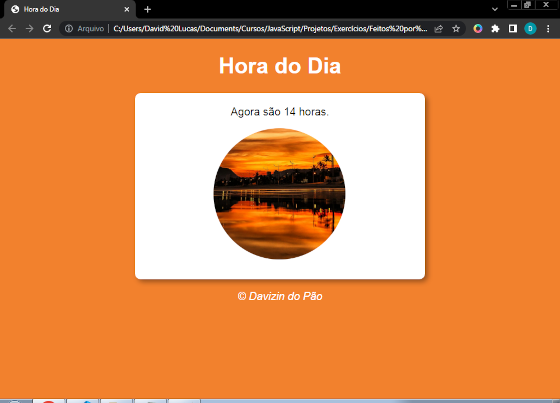
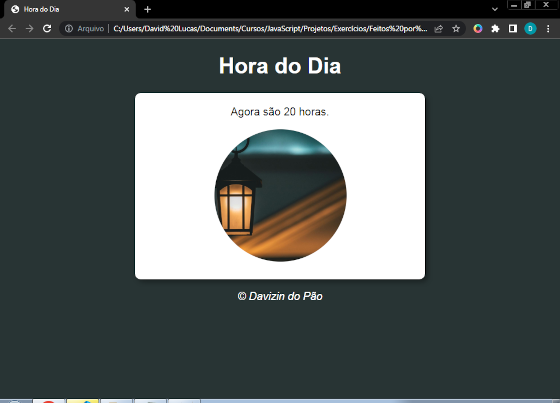

Sobre a Linguagem
JavaScript é uma linguagem de programação de alto nível, amplamente utilizada para adicionar interatividade e dinamismo a páginas da web. Criada por Brendan Eich em 1995, JavaScript permite que os desenvolvedores manipulem elementos HTML e CSS em tempo real, respondendo a ações do usuário, como cliques e movimentos do mouse. É uma das principais tecnologias da web, junto com HTML e CSS, e é fundamental para o desenvolvimento de aplicativos web modernos. Com o uso de bibliotecas e frameworks como React, Angular e Vue.js, JavaScript possibilita a criação de interfaces ricas e interativas.
Aprenda Você Também!
Se estiver interessado em aprender JavaScript, novamente eu te recomendo os cursos do Guanabara (eles são muito bons, e de graça!)
Meus Projetos
Hora do Dia
É um site simples que detecta a hora que a pessoa está acessando o site e usando JavaScript dependendo da hora que ela entrar.


Verificador de Idade
É um site onde você insere o seu ano de nascimento e seu sexo e ele irá calcular sua idade e de acordo com a idade e o sexo, irá mostrar uma imagem diferente, aqui vão dois exemplos: